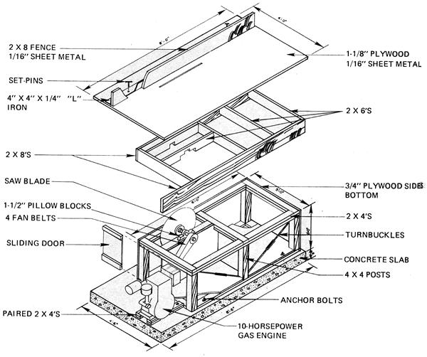
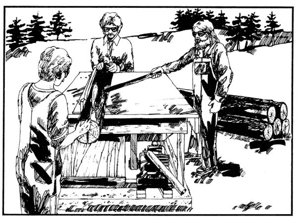

Talk about frustration!
There we were, right next door to a national forest, and every day we could see huge flatbed trucks chug into the woods and cart hundreds of giant logs out to a commercial lumber mill a few miles away.
How we envied that mill! Because, with all those millions of fine trees in the mountains around us, the high retail cost of lumber was keeping us from constructing a house right there on our very own homestead. And we had such a great location too: high on a bluff overlooking a quiet river valley.
"What we need," we told ourselves, "are two things: legal access to those trees and our own sawmill."
And, surprisingly enough after we'd analyzed the problem it only took a little applied imagination, a few inquiries, the passing of several weeks, and the expenditure of approximately $600 to put both the legal access and the sawmill neatly in our hip pocket. Here's how we did it:
Before we did anything else, we checked out the availability of all those national forest trees that surrounded our property. (After all, it did seem pointless to spend a lot of time and energy designing a mill if we couldn't get logs to cut with it.)
So we just took a little drive into the areas of forest that the commercial logging outfits were licensed to cut. And we quickly noticed that the loggers had felled many fine smaller trees to make the clearings and roads they needed to haul out the really big logs they were actually after.
The smaller trees, called "cull" in the trade, were too little for commercial use but they were certainly big enough for us! And there was so much cull scattered within easy reach of the timbering roads that we knew we'd easily be able to reach all we wanted with our two ton truck (we wouldn't need a tractor, winch, or any other heavy equipment to drag the trees from the forest).
So far, so good. The trees were within physical reach but what about legal access? Would the National Forest Service let us have a few of the logs that were going to waste? "Well," we told ourselves, "it won't hurt to ask."
Buoyed by such homespun wisdom, we made our way down to the local office of the NFS and explained to the rangers on duty what we had in mind. They were as cooperative as could be and told us that, for the trifling sum of $15.00 and the promise that we'd observe simple fire precautions and leave the roads and woods as we found them, we could have a permit to haul out 20,000 feet of cull logs. Twenty thousand feet! Needless to say, we paid the $15.00 and made the promises.
Getting those culls out of the forest was easier for us than you might think. The strong, young men in our group were willing to spend long and hard days in the woods in order to save several thousand dollars in lumber costs. And we already had a good chain saw with which to trim and section the trees we selected. And our trusty two ton truck with its 14 footlong bed was all we needed to haul the logs home.
So we just rolled up our sleeves and went to work. And before long, 20,000 feet of culls were stacked up out in our work lot.
Once we'd selected, trimmed, sectioned, and hauled home those logs we knew it was time to tackle the construction of that sawmill we wanted. So we began to look for the components we'd need to build the machine. And, living as we do in a logging region, they weren't too difficult to find.
First we spent about $90.00 for a good 30-inch circular saw blade with carbide cutting tips. The mill operators and machinists we talked to advised us on the best speeds to run the blade and told us what we'd need in the way of shafts, pillow blocks, pulleys, belts, and sheaves for the mill. Local suppliers who stood a chance to sell us the items we couldn't scrounge or buy secondhand were eager to help figure a way to link an engine to our blade and otherwise design what was really just an "oversized table saw".
To power that saw, we bought a brand new Briggs & Stratton one cylinder, 10 hp gasoline engine for $300. Chances are we could have picked up a good used one for much less but, since we sort of plan to extend our homesteading venture a ways into the future, we figured that the new engine was a good investment.
( EDITORS NOTE: Sawmills can be and have beer turned by almost any prime mover capable of supplying good lugging power or torque at low rpm. Steam engines and electric motors are widely used in commercial mills. Both, hover, have notable drawbacks:
It's not always easy to find a boiler for a steam engine, for example, and once you do you need an extra man, a stoker, to keep the powerplant running. Steam plants also have more than their share of trouble with local fire codes.
Electric motors aren't much better for sawmills. They have to be big to pull those oversized blades through green logs so big that they usually require special heavy duty wiring, transformers, etc., that are both expensive and frequently difficult to keep in service.
Water-powered sawmills, on the other hand, work like a charm but few of us have a handy stream running through our backyards these days. And diesels are expensive to buy. Which is why most small mills are now turned by the powerplant that most of us find most readily available, most affordable, and most convenient: the gasoline engine.)
JUST A BIG, OVERSIZED TABLE SAW
I've called our sawmill an oversized table saw, and it is. But what a table saw! First off, the table part of the rig is a full 4 X 8 sheet of 1-3/8" plywood bolted to a 2" X 6" and 2" X 8" frame and covered with a 1/16" thick sheet of metal (both to resist the weather and to provide a smooth surface for the logs to slide on).
The saw's cutting guide is an eight foot long piece of kiln dried, straight 2" X 8" redwood which is also covered on one side with 1/16" sheet metal. This rip fence is held to the top of the table by 4" X 4" X 1/4" angle iron that is, in turn, locked down by removable 3/8" steel pins. Holes drilled through the tabletop permit us to move the rip fence back and forth so that we can cut boards one, two, four, six, eight, and twelve inches wide. Changing from one setting to another is a snap.
The entire table was mounted on six 4" X 4" Douglas fir legs framed together with 2 X 4's. A 3/4" plywood floor and sides and diagonal wire braces cinched up tight with turnbuckles add strength and rigidity. The whole assembly was then fastened with embedded anchor bolts to a four inch thick concrete pad that measures approximately four feet wide by ten feet long.
The engine was separately mounted to two paired sets of 2 X 4's which, in turn, were anchored to the concrete foundation. Several layers of old inner tubes sandwiched between the pairs of 2 X 4's reduce to a minimum the amount of powerplant vibration transmitted to the saw's table.
AND IT WORKS!
What a joy it was to fire up that engine for the first time and run a log through the mill! All those exuberant weeks of logging together, simple carpentry, machining, and problem solving all of which had been fun were paying off at last. Hallaloo! We were in the lumber business!
To date, we've milled part of the timbers and boards we need for our new house (which we'll erect ourselves in accordance with local codes) and we're all full of the deep satisfaction that comes from using imagination and group energy to do it all ourselves.
Incidentally, just as we finished our mill, we learned that our county's building codes specify that all lumber used in construction must be certified for quality by an official inspector. This not only means that we have to be very careful to select logs free of bugs and rot but that the necessary inspections will run us anywhere from $50.00 to $300.
But that ain't dampened our spirits none. Cause inspection fee and all we're still milling out our own lumber for about one-tenth what it would cost us at the local retail lumberyard!
|
 Click on the image at left to enlarge it. |
 |
|